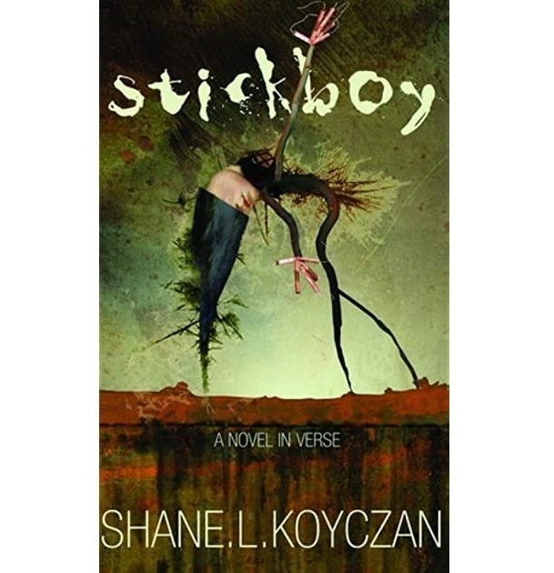

I have always found the most inspriation not from historical figures, billionaires, or celebrities, but from those that spark new ideas from their words alone. For this reason, I look to writers and I find most of my personal inspiration to be drawn from my favorite poet, Shane Koyczan.
I am not the only one who has found a love for Koyczan's words. Koyczan first found his popularity through his "To This Day" project, starting as a spoken word poem around anti-bullying and soon becoming a social movement. Over 25 million people have watched the original YouTube video, and the social justice project itself has led to TED talks, an app for anti-bullying, and more. Koyczan's largest theme of focus in his work surrounds mental health and inspires millions who may be struggling. He has published 13 books thus far containing collections of his poetry, as well as a plethora of audiobooks and content on platforms such as Spotify and Youtube. I know he has played an incredibly large role throughout my life in inspiring me to be better, and I know he has done the same for countless others through the sharing of his experiences and words.
Click here for a list of Koyczan's books!
